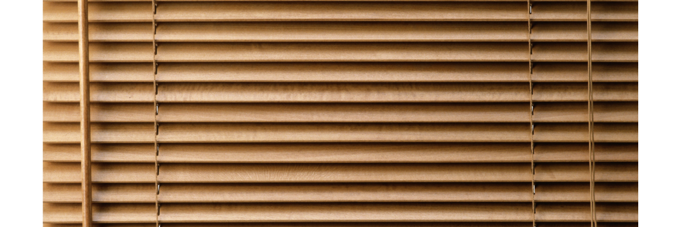
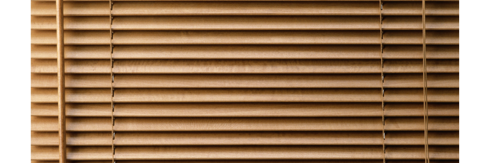
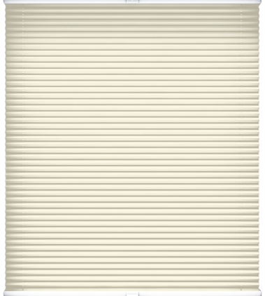
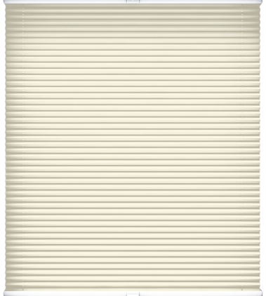

Электро-жалюзи
С помощью одного пульта можно управлять жалюзи быстро и легко, не вставая с кресла. Возможность контролировать освещенность помещения всего одним нажатием кнопки. Такие жалюзи особенно хороши для труднодоступных окон.
 

Горизонтальные
Выполняются из разных пород древисины и бамбука. Чаще всего используется в дизайне комнат восточном, марокканском, этнографическом и кантри стилях. Рекомендуется крепление на проем, в проем и на створки окна.
Вертикальные
На сегодняшний день разнобразие материалов, цветов и фактур позволяет уже не ассоциировать вертикальные жалюзи с офисами. Они будут идеально смотреться в интерьерах любого назначения. Рекомендуется крепление на проем и в проем окна.
Самые интересные варианты вертикальных жалюзи. Преображают жилое и офисное пространство, выполняя свою солнцезащитную функцию. Рекомендуется крепление на проем и в проем окна.

 

Рулонные
Предназначены для установки на рамы вертикальных или поворотно-откидных окон. Это свободновисящая модель с нижней магнитной фиксацией или с боковой фиксацией на леску. Подъем и опускание осуществляется при помощи цепи
Шторы разработанны специально для установки на створку окна. Верхний короб и направляющие визуально объединяют изделие с окном. Защищают края ткани от износа продлевая срок службы.
нажми на шторку


Этими шторами можно украсить окно любой конфигурации. Они подчеркнут и украсят его нестандартную форму. Такие ткани могут быть разной плотности, фактуры и цвета.
Москитные сетки
Самая обычная, широко распространенная, москитная сетка представляет собой легкую конструкцию из экструдированного алюминиевого профиля. Москитный профиль служит своебразным каркасом для всей конструкции. По периметру рамки, используя уплотнительный шнур, закатывается сетка.